Software Tutorial: Molecular Dynamics Analysis using DynOmics 1.0
Molecular Dynamics Analysis using DynOmics 1.0
In this tutorial, we will be using a publicly available web server, DynOmics, by Dr. Hongchun Li et. al. in the Bahar Lab at the University of Pittsburgh, School of Medicine. This server is dedicated to performing molecular dynamics analysis by integrating the Gaussian Network Model (GNM) and the Anisotropic Network Model (ANM).
Head over to the main page of DynOmics by following this link DynOmics 1.0. Here, we can see many options that we can change to customize our analysis. But for now, we will stick to the default options. To choose our target molecule, we need to input the PDB ID. Since we will be performing the analysis on the SARS-CoV-2 S protein, we will use the PDB ID: 6vxx. Then, click Submit.
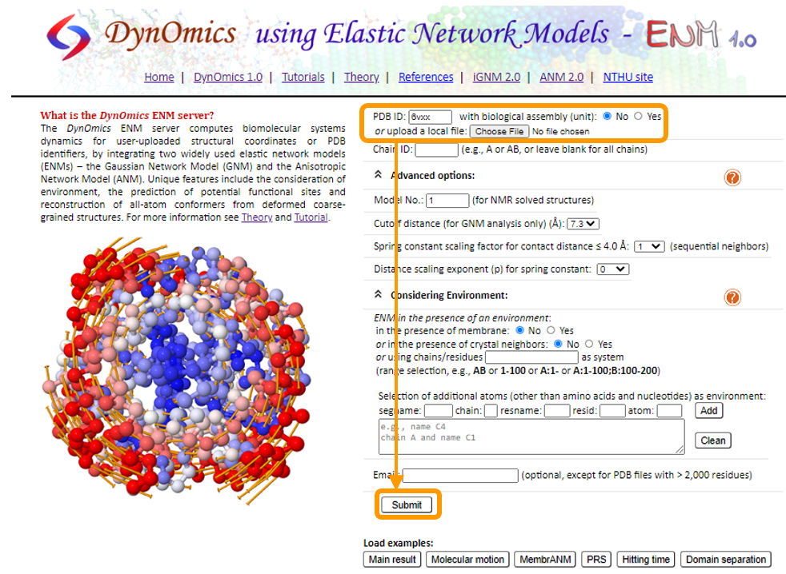
Once the analysis is complete, you will see all the ANM and GNM results listed next to an interactive visualization of the protein. In addition, the visualization is colored based on the predicted protein flexibility from the slow mode analysis.
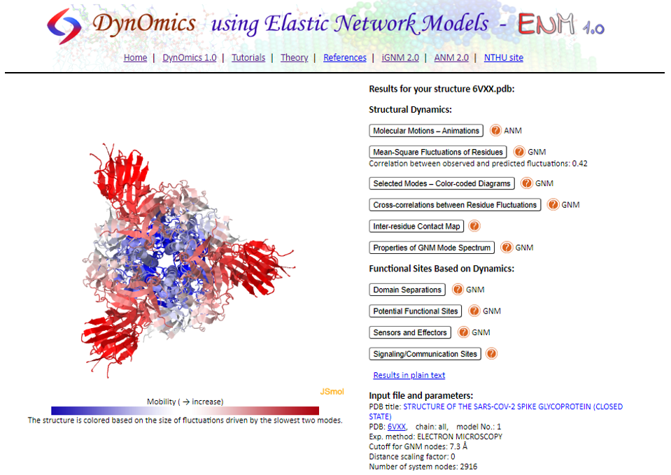
Let’s explore some of the results starting with Molecular Motions - Animations. Here we see an animated, interactive visualization of the protein with the same coloring as before. This time, we are able to see the actual predicted motion of the protein fluctuation based on ANM calculations. On the right, we can customize the animation by changing the vibrations and vectors to make the motions more pronounced. More importantly, we can change the Mode index. Recall that we have learned that the motion of protein fluctuations can be broken down into a collection of modes. By changing the Mode index, we can see the different contribution of each mode to the motion. Another neat thing that we can do is to download the calculations as a .nmd file and visualize it in VMD!
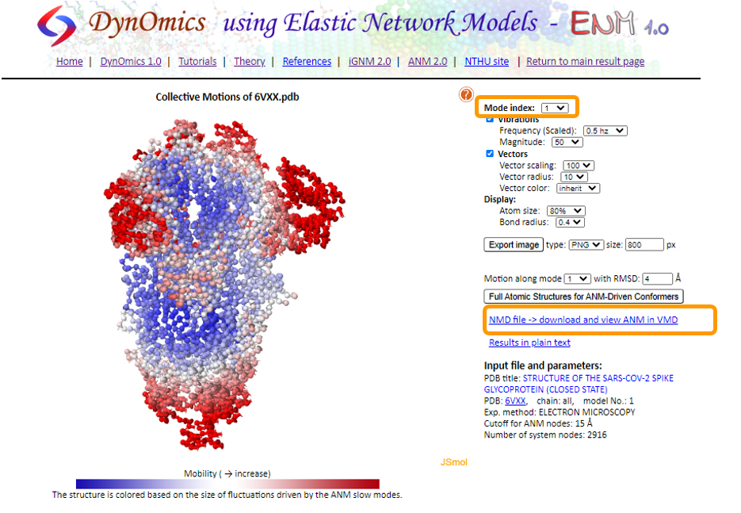
If you are interested in using VMD, open the software and go to Extensions > Analysis > Normal Mode Wizard. Then, click Load NMD File and select the .nmd that you downloaded. Now that the ANM calculation is loaded into VMD, you can customize the visualization and recreate the animation by clicking Animation: Play.
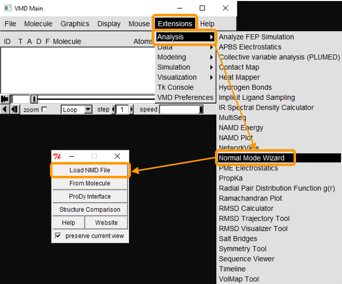
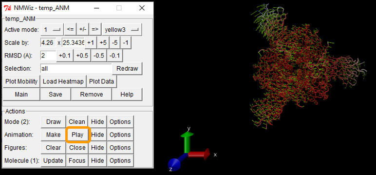
Next, head over to Mean-Square Fluctuations of Residues. On this page, you will see two visualizations of the protein, labelled “Theoretical B-Factors” and “Experimental B-Factors” as well as the B-factor plot. Recall that theoretical B-factors are calculated during the GNM analysis while the experimental B-factors are included in the PDB. On the bottom, we can see the plot of the B-factors across the entire protein split into chains.
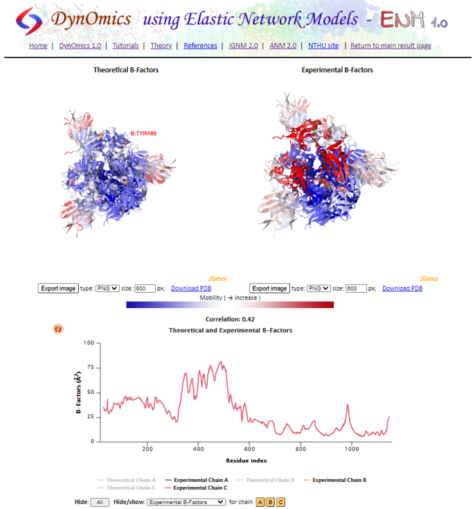
The next result page is Selected Modes - Color-coded Diagrams. Here, we can see the shape of each individual slow mode or an average of slowest 1-2, 1-3, or 1-10. Again, we can see a wide peak that corresponds to the RBD of the S protein. You can also click on the plot to highlight the residue on the interactive visualizations.
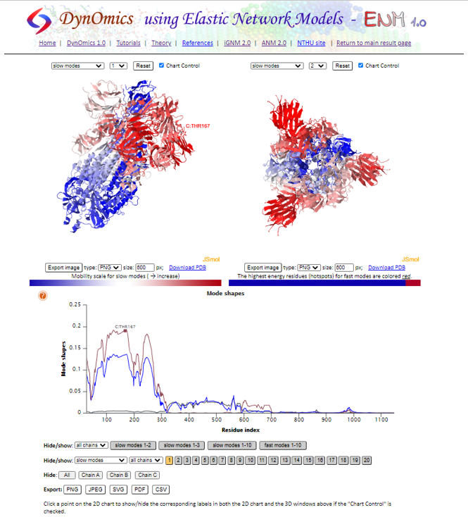
In Cross-correlations between Residue Fluctuations, we can see the full cross-correlation heat map and see the correlation between each pair of residue.
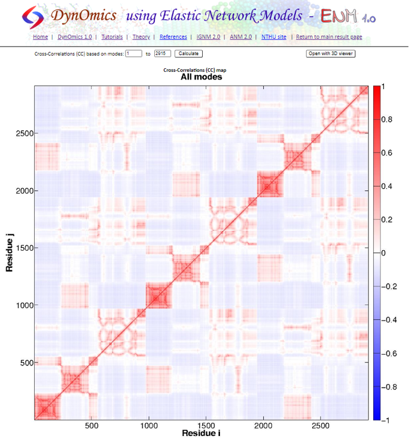
For Inter-residue Contact Map, you will see a visualization of the connected alpha-Carbon structure based on the cutoff distance. On the right is the Connectivity Map that indicates which pair of residues are within the cutoff distance. The default is set to 7.3 Å. If you want to change the threshold, we have to redo the calculations and change the cutoff distance in Advanced options.
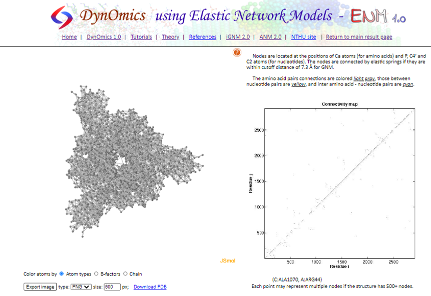
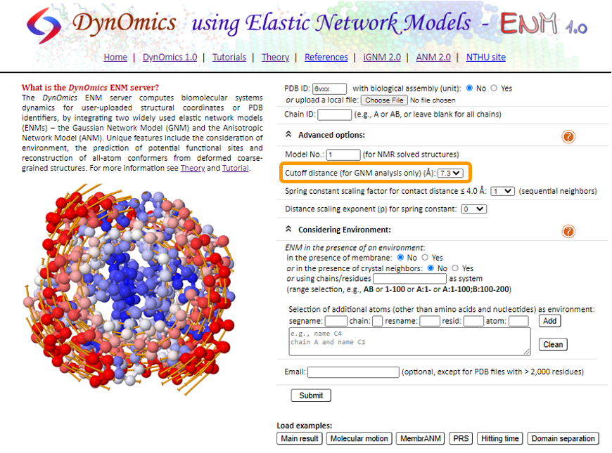
Finally, in Properties of GNM Mode Spectrum, we can see two different plots on modes: Frequency Dispersion and Degree of Collectivity. In the frequency dispersion plot, a high value indicates a slow mode with low frequency, which are expected to be highly related to biological functions. Recall that the slowest modes contribute the most to the protein fluctuation. The degree of collectivity plot measures the extent of structural elements (residues) move together for each mode. High degree of collectivity indicates that the mode is highly cooperative and engages in a large portion of the structure. Low degree of collectivity indicates that the mode only affects a small region.
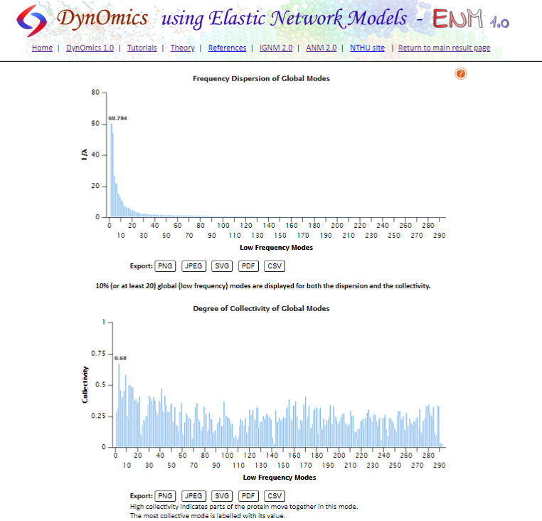
That is all for how to get the structural dynamics results of DynOmics. If you are interested in the other results, DynOmics has provided its own tutorial here.
We will now head back to the main text in order to analyze our GNM/ANM results of SARS-CoV-2 S protein and compare it with SARS-CoV S protein to see if we can distinguish any significant differences.
If you would rather perform GNM/ANM analysis using command line, ProDy, and VMD, please go to the following tutorials